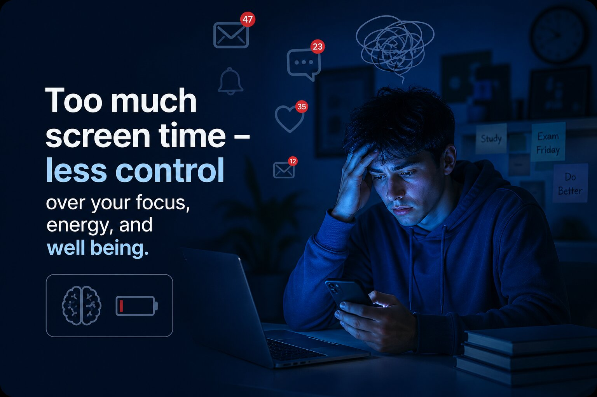

What is Digital Overload?
Digital overload is the constant exposure to screens, notifications, and online content that overwhelms your brain. For college students, it often comes from balancing academic work with heavy use of apps like TikTok, Instagram, Snapchat, and X.
This nonstop input makes it harder to focus, shortens attention span, and disrupts sleep, especially for Gen Z students who are always connected. Over time, it can lead to burnout, mental fatigue, and decreased productivity.
